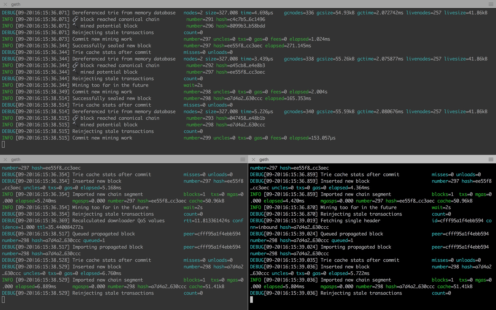

虽然以太坊是一个公有链系统，但是我们可以通过设置一些参数来运行自己的私有链节点，在自己的私有链上进行开发和测试不需要同步公有链数据，也不需要花钱来买以太币，节省存储空间和成本，而且很灵活很方便。本文介绍使用geth客户端搭建私有链的操作步骤，同时会解释在这个过程中用到的各个命令及选项的含义和作用，最后会介绍geth的Javascript Console中的一些常用功能。
前置需求
Homebrew(Mac OSX上的软件包管理工具，能在Mac中方便的安装软件或者卸载软件)
Homebrew的安装很简单，只需在终端下输入如下指令：
1
ruby -e "$(curl -fsSL https://raw.githubusercontent.com/Homebrew/install/master/install)"
如果出现安装失败或者安装成功后无法执行update和install命令，重新安装即可
go-ethereum客户端安装
1 | brew tap ethereum/ethereum |
安装以后输入一下代码检测是否成功安装
1
geth --help //能成功显示输出帮助即代表成功
开始搭建！
准备创世区块
以太坊支持自定义创世区块，要运行私有链，我们就需要定义自己的创世区块，创世区块信息写在一个json格式的配置文件中。首先将下面的内容保存到一个json文件中，例如genesis.json。
其中详细内容可参考：here
1 | { |
配置说明：
- config.chainId // 区块链的ID，在
geth命令中的--networkid参数需要与chainId的值一致 - config.homesteadBlock //
Homestead硬分叉区块高度，不需要关注 - config.eip155Block //
EIP 155硬分叉高度，不需要关注 - config.eip158Block //
EIP 158硬分叉高度，不需要关注 - coinbase // 矿工账号，第一个区块挖出后将给这个矿工账号发送奖励的以太币
- difficulty // 难度值，越大越难
- extraData // 附加信息随便填,但是我自己弄得时候提示错误，信息是提示我16进制前必须加
0X的，但是我都加了，后来我将此字段为空，success. - gasLimit //
gas的消耗总量限制，用来限制区块能包含的交易信息总和，因为我们是私有链，所以填最大 - nonce // 一个 64 位随机数
- mixhash // 与
nonce配合用于挖矿，由上一个区块的一部分生成的hash - parentHash // 上一个区块的
hash值 - alloc // 预设账号以及账号的以太币数量，私有链挖矿比较容易可以不配置
如果要配置预设账号以及以太币数量的话，以下
“alloc”: {"3ae88fe370c39384fc16da2c9e768cf5d2495b48": {//账户地址，看不懂可以先往下 "balance": "20000009800000000000000000000" }, "81063419f13cab5ac090cd8329d8fff9feead4a0": { "balance": "20000009800000000000000000000" }, "9da26fc2e1d6ad9fdd46138906b0104ae68a65d8": { "balance": "20000009800000000000000000000" },}
初始化创世区块
配置文件准备好之后就可以开始初始化了，将上面的创世区块信息写到区块链中。首先要新建一个目录用来存放区块链数据，假设新建的数据目录为：~/privateChain/data0,genesis.json保存在~/privateChain中，此时目录结构应该是这样的：1
2
3privatechain
├── data0
└── genesis.json
输出目录的tree图可以用之前提到的brew来安装，
brew install tree来安装，命令tree -a直接就可以查看当前目录所有目录文件tree图(-a可省略），-d为只看目录。
接下来进入privateChain,执行初始化命令：1
geth --datadir data0 init genesis.json
上面的命令的主体是 geth init，表示初始化区块链，命令可以带有选项和参数，其中--datadir选项后面跟一个目录名，这里为 data0，表示指定数据存放目录为 data0， genesis.json是init命令的参数。
运行上面的命令，会读取genesis.json文件，根据其中的内容，将创世区块写入到区块链中。如果看到以下的输出内容，说明初始化成功了。1
2
3
4
5
6
7
8
9INFO [09-19|14:52:17.540] Maximum peer count ETH=25 LES=0 total=25
INFO [09-19|14:52:17.551] Allocated cache and file handles database=/Users/hyperchain/Documents/hyperchain/practice/data0/geth/chaindata cache=16 handles=16
INFO [09-19|14:52:17.553] Writing custom genesis block
INFO [09-19|14:52:17.553] Persisted trie from memory database nodes=0 size=0.00B time=12.972µs gcnodes=0 gcsize=0.00B gctime=0s livenodes=1 livesize=0.00B
INFO [09-19|14:52:17.554] Successfully wrote genesis state database=chaindata hash=b052b0…1553c1
INFO [09-19|14:52:17.554] Allocated cache and file handles database=/Users/hyperchain/Documents/hyperchain/practice/data0/geth/lightchaindata cache=16 handles=16
INFO [09-19|14:52:17.556] Writing custom genesis block
INFO [09-19|14:52:17.556] Persisted trie from memory database nodes=0 size=0.00B time=4.831µs gcnodes=0 gcsize=0.00B gctime=0s livenodes=1 livesize=0.00B
INFO [09-19|14:52:17.556] Successfully wrote genesis state database=lightchaindata hash=b052b0…1553c1
初始化成功后的目录结构如下：1
2
3
4
5
6
7
8
9
10
11
12
13
14
15
16
17
18.
|____genesis.json
|____.DS_Store
|____data0
| |____geth
| | |____chaindata
| | | |____000001.log
| | | |____MANIFEST-000000
| | | |____LOCK
| | | |____CURRENT
| | | |____LOG
| | |____lightchaindata
| | | |____000001.log
| | | |____MANIFEST-000000
| | | |____LOCK
| | | |____CURRENT
| | | |____LOG
| |____keystore
其中geth/chaindata中存放的是区块数据，keystore中存放的是账户数据。
启动私有链节点
初始化完成后，就有了一条自己的私有链，之后就可以启动自己的私有链节点并做一些操作，在终端中输入以下命令即可启动节点：1
geth --datadir data0 --networkid 1108 console
上面命令的主体是geth console，表示启动节点并进入交互式控制台，--datadir选项指定使用data0作为数据目录，--networkid选项后面跟一个数字，这里是1108，表示指定这个私有链的网络id为1108。网络id在连接到其他节点的时候会用到，以太坊公网的网络id是1，为了不与公有链网络冲突，运行私有链节点的时候要指定自己的网络id。
运行上面的命令后，就启动了区块链节点并进入了Javascript Console：1
2
3
4Welcome to the Geth JavaScript console!
instance: Geth/v1.8.14-stable/darwin-amd64/go1.10.3
modules: admin:1.0 debug:1.0 eth:1.0 ethash:1.0 miner:1.0 net:1.0 personal:1.0 rpc:1.0 txpool:1.0 web3:1.0
这是一个交互式的Javascript执行环境，在这里面可以执行Javascript代码，其中>是命令提示符。在这个环境里也内置了一些用来操作以太坊的Javascript对象，可以直接使用这些对象。这些对象主要包括：
- eth：包含一些跟操作区块链相关的方法
- net：包含以下查看p2p网络状态的方法
- admin：包含一些与管理节点相关的方法
- miner：包含启动&停止挖矿的一些方法
- personal：主要包含一些管理账户的方法
- txpool：包含一些查看交易内存池的方法
- web3：包含了以上对象，还包含一些单位换算的方法
正式开始搞事情！~
进入以太坊Javascript Console后，就可以使用里面的内置对象做一些操作，这些内置对象提供的功能很丰富，比如查看区块和交易、创建账户、挖矿、发送交易、部署智能合约等。接下来介绍几个常用功能，下面的操作中，前面带>的表示在Javascript Console中执行的命令。
创建账户
前面只是搭建了私有链，并没有自己的账户，可以在js console中输入eth.accounts来验证：1
2> eth.accounts
[]
接下来使用personal对象来创建一个账户：1
2
3
4> personal.newAccount()
Passphrase:
Repeat passphrase:
"0x82671aa9660cd876e21b801d48736c157073c2ff"
会提示输入密码和确认密码，输入密码不会有显示，只要输入就可以了，之后就会显示新创建的账户地址。
可以创建多个账户，我们再来创建一个账户：
1 | > personal.newAccount() |
接下来就可以查看到刚才创建的两个账户了：
1 | > eth.accounts |
账户默认会保存在数据目录的keystore文件夹中。查看目录结构，发现data0/keystore中多了两个文件，这两个文件就对应刚才创建的两个账户，这是json格式的文本文件，可以打开查看，里面存的是私钥经过密码加密后的信息。
Tip：命令都可以按Tab键自动补全。
查看账户余额
通过miner.start()来启动挖矿：1
> miner.start(1)
其中start的参数表示挖矿使用的线程数。第一次启动挖矿会先生成挖矿所需的DAG文件，这个过程有点慢，等进度达到100%后，就会开始挖矿，此时屏幕会被挖矿信息刷屏。
如果想停止挖矿，在js console中输入miner.stop()：1
> miner.stop()
注意：输入的字符会被挖矿刷屏信息冲掉，没有关系，只要输入完整的miner.stop()之后回车，即可停止挖矿。
挖到一个区块会奖励5个以太币，挖矿所得的奖励会进入矿工的账户，这个账户叫做coinbase，默认情况下coinbase是本地账户中的第一个账户：1
2> eth.coinbase
"0x82671aa9660cd876e21b801d48736c157073c2ff"
现在的coinbase是账户0，要想使挖矿奖励进入其他账户，通过miner.setEtherbase()将其他账户设置成coinbase即可:1
2> miner.setEtherbase(eth.accounts[1])
true
我们还是以账户0作为coinbase，挖到区块以后，账户0里面应该就有余额了：1
2> eth.getBalance(eth.accounts[0])
50000000000000000000
getBalance()返回值的单位是wei，wei是以太币的最小单位，1个以太币=10的18次方个wei。要查看有多少个以太币，可以用web3.fromWei()将返回值换算成以太币：1
2> web3.fromWei(eth.getBalance(eth.accounts[0]),'ether')
50
发送交易
目前，账户1的余额还是0：1
2> eth.getBalance(eth.accounts[1])
0
可以通过发送一笔交易，从账户0转移5个以太币到账户1：1
2
3
4
5
6
7
8> amount = web3.toWei(5,'ether')
"5000000000000000000"
> eth.sendTransaction({from:eth.accounts[0],to:eth.accounts[1],value:amount})
Error: authentication needed: password or unlock
at web3.js:3143:20
at web3.js:6347:15
at web3.js:5081:36
at <anonymous>:1:1
这里报错了，原因是账户每隔一段时间就会被锁住，要发送交易，必须先解锁账户，由于我们要从账户0发送交易，所以要解锁账户0：1
2
3
4> personal.unlockAccount(eth.accounts[0])
Unlock account 0x82671aa9660cd876e21b801d48736c157073c2ff
Passphrase:
true
输入创建账户时设置的密码，就可以成功解锁账户。然后再发送交易：1
2
3
4
5
6> amount = web3.toWei(5,'ether')
"5000000000000000000"
> eth.sendTransaction({from:eth.accounts[0],to:eth.accounts[1],value:amount})
INFO [09-19|16:17:36.031] Setting new local account address=0x82671aa9660cd876E21B801D48736C157073C2Ff
INFO [09-19|16:17:36.032] Submitted transaction fullhash=0x4ebc1cf16a7eaa7e91ca2a300eda8ad7fbb7f38b5af7b85f968808da6c39dc80 recipient=0xC8fAFE5fc9b7F1077f1ECC4899c74c082c450F80
"0x4ebc1cf16a7eaa7e91ca2a300eda8ad7fbb7f38b5af7b85f968808da6c39dc80"
此时交易已经提交到区块链，返回了交易的hash，但还未被处理，这可以通过查看txpool来验证：1
2
3
4
5> txpool.status
{
pending: 1,
queued: 0
}
其中有一条pending的交易，pending表示已提交但还未被处理的交易。
要使交易被处理，必须要挖矿。这里我们启动挖矿，然后等待挖到一个区块之后就停止挖矿：1
> miner.start(1);admin.sleepBlocks(1);miner.stop();
当miner.stop()返回true后，txpool中pending的交易数量应该为0了，说明交易已经被处理了：1
2
3
4
5> txpool.status
{
pending: 0,
queued: 0
}
此时，交易已经生效，账户一应该已经收到了5个以太币了：1
2> web3.fromWei(eth.getBalance(eth.accounts[1]),'ether')
5
查看交易和区块
eth对象封装了查看交易和区块信息的方法。
查看当前区块总数：1
2> eth.blockNumber
69
通过交易hash查看交易:1
2
3
4
5
6
7
8
9
10
11
12
13
14
15
16
17> eth.getTransaction("0x4ebc1cf16a7eaa7e91ca2a300eda8ad7fbb7f38b5af7b85f968808da6c39dc80")
{
blockHash: "0xdff13e378c9472d870c9e3a6b9114489dc900ca70b7112c9a52e35325acb266c",
blockNumber: 11,
from: "0x82671aa9660cd876e21b801d48736c157073c2ff",
gas: 90000,
gasPrice: 18000000000,
hash: "0x4ebc1cf16a7eaa7e91ca2a300eda8ad7fbb7f38b5af7b85f968808da6c39dc80",
input: "0x",
nonce: 0,
r: "0x4b37ca8e1af7a436bf9d2f62bca0952b0c3dbd04ff6c3ad0dcd1b057500d2586",
s: "0x15d9eddb05021a87b2331a02f9dc37b1c288a71b84298c5b550e5996d46a91e1",
to: "0xc8fafe5fc9b7f1077f1ecc4899c74c082c450f80",
transactionIndex: 0,
v: "0x38",
value: 5000000000000000000
}
通过区块号查看区块：1
2
3
4
5
6
7
8
9
10
11
12
13
14
15
16
17
18
19
20
21
22
23> eth.getBlock(1)
{
difficulty: 131072,
extraData: "0xd98301080e846765746888676f312e31302e338664617277696e",
gasLimit: 3144658,
gasUsed: 0,
hash: "0x3081da6a8b3282eed28582d8ebf5d8bf5b5ed0e7b9ba3d06802a915b09dc6388",
logsBloom: "0x00000000000000000000000000000000000000000000000000000000000000000000000000000000000000000000000000000000000000000000000000000000000000000000000000000000000000000000000000000000000000000000000000000000000000000000000000000000000000000000000000000000000000000000000000000000000000000000000000000000000000000000000000000000000000000000000000000000000000000000000000000000000000000000000000000000000000000000000000000000000000000000000000000000000000000000000000000000000000000000000000000000000000000000000000000000",
miner: "0x82671aa9660cd876e21b801d48736c157073c2ff",
mixHash: "0x48d22be5e66d6f67f25876eb8058a4e954bf8a1dcc52d231cfd11bd7b76dfd2d",
nonce: "0x1b6eb6f408488ee2",
number: 1,
parentHash: "0xb052b04f62e162f598755f65ff9a8c3d00e8bcf709cc24c68c2d4780031553c1",
receiptsRoot: "0x56e81f171bcc55a6ff8345e692c0f86e5b48e01b996cadc001622fb5e363b421",
sha3Uncles: "0x1dcc4de8dec75d7aab85b567b6ccd41ad312451b948a7413f0a142fd40d49347",
size: 537,
stateRoot: "0x5bcb816054cc5795094610b8fef25b52aeac065676d7ead473aca31718a685cc",
timestamp: 1537344766,
totalDifficulty: 132096,
transactions: [],
transactionsRoot: "0x56e81f171bcc55a6ff8345e692c0f86e5b48e01b996cadc001622fb5e363b421",
uncles: []
}
单机器多节点
开始操作
都说区块链是去中心化的账本那么可以满足于单机挖矿？说干就干接下来创建一个新节点并将太接入我们的主节点。
这里需要注意以下几点：
- 新节点的
networkid要与boot node（data0）一致 - 需要与
boot node使用同一个创世区块 如果多个节点都在一台机器上注意端口区分，避免端口冲突
--port 30305--rpcport 9546
1 | geth --datadir data1 init genesis.json |
接下来需要建立节点间的联系
首先，获取节点的enode信息：
1
2
3> admin.nodeInfo.enode
"enode://b161691aa95a43fd9d30d2d34d2c1e1fbb3b84199eaa02a6c4daf8ad869d4f10291faf1efa2757bdaed736033f86b32247f796e206e2259483a603b881c9257b@[::]:30305?discport=0"然后将data1的enode信息加入到data0中
1
2> admin.addPeer("enode://b161691aa95a43fd9d30d2d34d2c1e1fbb3b84199eaa02a6c4daf8ad869d4f10291faf1efa2757bdaed736033f86b32247f796e206e2259483a603b881c9257b@[::]:30305?discport=0")
true此时可以通过
admin.peers来查看节点间已经取得联系1
2
3
4
5
6
7
8
9
10
11
12
13
14
15
16
17
18
19
20> admin.peers
[{
caps: ["eth/63"],
id: "b161691aa95a43fd9d30d2d34d2c1e1fbb3b84199eaa02a6c4daf8ad869d4f10291faf1efa2757bdaed736033f86b32247f796e206e2259483a603b881c9257b",
name: "Geth/data1/v1.8.14-stable/darwin-amd64/go1.10.3",
network: {
inbound: false,
localAddress: "[::1]:62089",
remoteAddress: "[::1]:30305",
static: true,
trusted: false
},
protocols: {
eth: {
difficulty: 1024,
head: "0xa8e424b11b656aa6f46c98514df6bd36773184235369fafbb32bf493bebb847c",
version: 63
}
}
}]
多节点同理
测试
- 第一个节点启动挖矿，其余节点不挖矿。
可以看到，所有的区块都被第一个节点挖出来了，其余区块只是做数据的同步。
 查看区块数。
这时可以通过eth.blockNumber来查看，发现两个节点的blockNumber都相同，即成功。1
2> eth.blockNumber
249查看节点信息
比如查看第二个节点的信息1
2
3
4
5
6
7
8
9
10
11
12
13
14
15
16
17
18
19
20
21
22
23
24
25
26
27> admin.nodeInfo
{
enode: "enode://b161691aa95a43fd9d30d2d34d2c1e1fbb3b84199eaa02a6c4daf8ad869d4f10291faf1efa2757bdaed736033f86b32247f796e206e2259483a603b881c9257b@[::]:30305?discport=0",
id: "b161691aa95a43fd9d30d2d34d2c1e1fbb3b84199eaa02a6c4daf8ad869d4f10291faf1efa2757bdaed736033f86b32247f796e206e2259483a603b881c9257b",
ip: "::",
listenAddr: "[::]:30305",
name: "Geth/data1/v1.8.14-stable/darwin-amd64/go1.10.3",
ports: {
discovery: 0,
listener: 30305
},
protocols: {
eth: {
config: {
chainId: 10,
eip150Hash: "0x0000000000000000000000000000000000000000000000000000000000000000",
eip155Block: 0,
eip158Block: 0,
homesteadBlock: 0
},
difficulty: 42809314,
genesis: "0xa8e424b11b656aa6f46c98514df6bd36773184235369fafbb32bf493bebb847c",
head: "0x7232635362e9479b8744aa4ad31d5ed25c387aaadb0bf7e8993663df25b23ece",
network: 1000
}
}
}
查看第一个节点的信息1
2
3
4
5
6
7
8
9
10
11
12
13
14
15
16
17
18
19
20> admin.peers
[{
caps: ["eth/63"],
id: "b161691aa95a43fd9d30d2d34d2c1e1fbb3b84199eaa02a6c4daf8ad869d4f10291faf1efa2757bdaed736033f86b32247f796e206e2259483a603b881c9257b",
name: "Geth/data1/v1.8.14-stable/darwin-amd64/go1.10.3",
network: {
inbound: false,
localAddress: "[::1]:62089",
remoteAddress: "[::1]:30305",
static: true,
trusted: false
},
protocols: {
eth: {
difficulty: 1024,
head: "0xa8e424b11b656aa6f46c98514df6bd36773184235369fafbb32bf493bebb847c",
version: 63
}
}
}
可以看到，第一个节点连接的node id正好是第二个节点的id.
- 查看节点连接数
1 | > net.peerCount |
也就分别连接了一个节点。